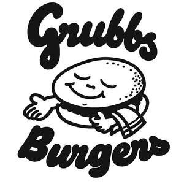

Trade Mark Journal No.2025/034 22 August 2025
UK00004249379 14 August 2025 (25,35,39,40,42,43)

- Class 25
- Clothing; Ready-to-wear clothing; Leisure clothing; Casual clothing; Clothing for sports; Sports clothing; Jackets [clothing]; Knitwear [clothing]; Woolen clothing; Furs [clothing]; Garments for protecting clothing; Layettes [clothing]; Clothing layettes; Linen clothing; Headbands [clothing]; Headbands for clothing; Gloves [clothing]; Gloves as clothing; Clothes; Aprons [clothing]; Maternity clothing; Kerchiefs [clothing]; Jerseys [clothing]; Denims [clothing]; Shorts [clothing]; Cashmere clothing; Capes (clothing); Oilskins [clothing]; Gabardines [clothing]; Leather clothing; Clothing of leather; Leather (Clothing of -); Parts of clothing, footwear and headgear; Collars [clothing]; Silk clothing; Veils [clothing]; Knitted clothing; Hoods [clothing]; Windproof clothing; Corsets [clothing, foundation garments]; Embroidered clothing; Wristbands [clothing]; Belts [clothing]; Belts for clothing; Rainproof clothing; Waterproof clothing; Bandeaux [clothing]; Visors [clothing]; Jackets being sports clothing; Jackets (Stuff -) [clothing]; Stuff jackets [clothing]; Playsuits [clothing]; Bottoms [clothing]; Clothing for leisure wear; Ready-made clothing; Latex clothing; Trunks being clothing; Woven clothing; Infant clothing; Drawers [clothing]; Drawers as clothing; Ties [clothing]; Athletic clothing; Clothing for children; Muffs [clothing]; Bodies [clothing]; Clothing for babies; Clothing for infants; Tops [clothing]; Clothing for cycling; Weatherproof clothing; Pockets for clothing; Fabric belts [clothing]; Triathlon clothing; Handwarmers [clothing]; Water-resistant clothing; Clothing for skiing; Cowls [clothing]; Chaps (clothing); Beach clothing; Thermal clothing; Men's clothing; Fishing clothing; Dance clothing; Braces for clothing; Mitts [clothing].
- Class 35
- Retail services connected with the sale of clothing and clothing accessories; Retail store services in the field of clothing; Retail services in relation to clothing accessories; Retail services in relation to clothing; Online retail store services in relation to clothing; Retail services relating to clothing; Online retail store services relating to clothing; Mail order retail services for clothing accessories; Online retail services relating to clothing; Mail order retail services for clothing; Retail services in relation to fashion accessories; Retail services in relation to downloadable virtual clothing; Online retail services for downloadable virtual clothing; Mail order retail services connected with clothing accessories; Retail services in relation to footwear; Retail of third-party pre-paid cards for the purchase of clothing; Online retail services in relation to downloadable virtual clothing; Wholesale services in relation to clothing; Business management of wholesale and retail outlets; Retail services relating to jewelry; Unmanned retail store services relating to food; Retail services in relation to jewellery; Retail services in relation to bicycle accessories; Retail services relating to food.
- Class 39
- Transportation of food; Transport of food; Storage of food; Delivery of food and drink prepared for consumption.
- Class 40
- Food canning; Food processing; Food smoking; Food and drink preservation; Pasteurizing of food and beverages; Irradiation of food; Preservation of food; Food preservation; Food and beverage treatment; Pasteurising of food and beverages; Food grinding; Food milling; Pasteurization services for food and beverages.
- Class 42
- Design of clothing; Clothing design services; Design services for clothing; Retail design services.
- Class 43
- Food and drink catering; Catering of food and drink; Catering (Food and drink -); Catering of food and drinks; Preparation of food and drink; Preparation of food and beverages; Provision of food and drink in restaurants; Fast food restaurants; Take-away food and drink services; Providing of food and drink; Providing food and drink; Takeaway food and drink services; Serving food and drinks; Providing food and beverages; Provision of food and beverages; Provision of food and drink; Hospitality services [food and drink]; Take-away food services; Decorating of food; Providing food and drink in bistros; Services for the preparation of food and drink; Food and drink preparation services; Food and drink catering for institutions; Takeaway food services; Food and drink catering for banquets; Providing food and drink for guests in restaurants; Take-away fast food services; Serving food and drink for guests in restaurants; Catering for the provision of food and beverages; Providing food and drink in doughnut shops; Food preparation; Catering for the provision of food and drink.
Oliver George Davies